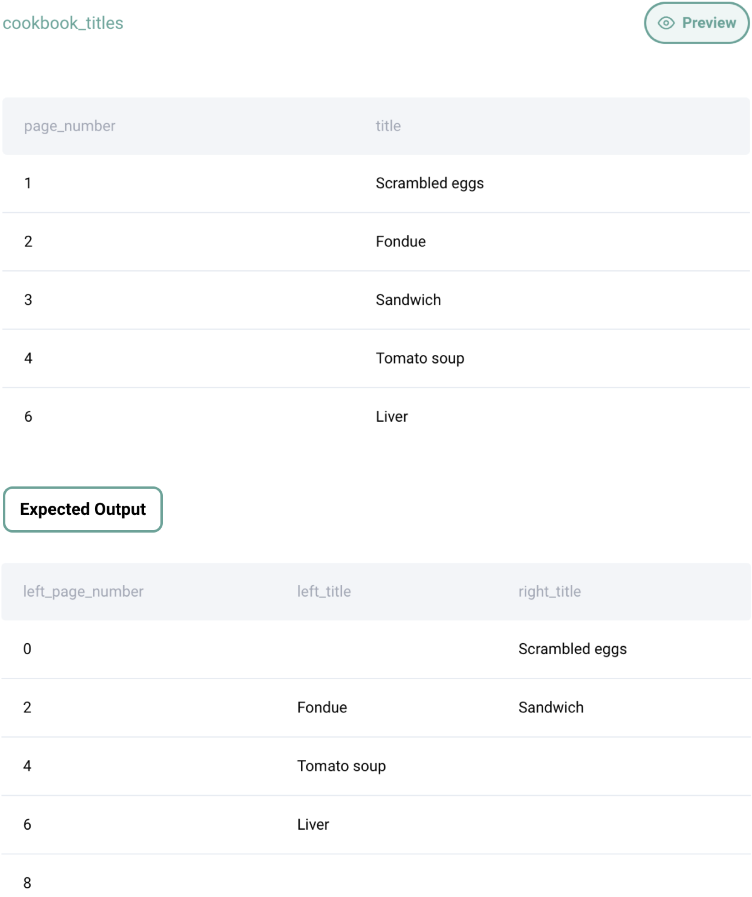

Question sourced from StrataScratch.com.
Database: PostgreSQL
You are given the table with titles of recipes from a cookbook and their page numbers. You are asked to represent how the recipes will be distributed in the book.
Produce a table consisting of three columns: left_page_number, left_title and right_title. The k-th row (counting from 0), should contain the number and the title of the page with the number 2 x k in the first and second columns respectively, and the title of the page with the number 2 x k + 1 in the third column.
Each page contains at most 1 recipe. If the page does not contain a recipe, the appropriate cell should remain empty (NULL value). Page 0 (the internal side of the front cover) is guaranteed to be empty.

/*
My strategy: The final table has three columns that need to be derived
in some way: left_page_number, left_title, and right_title. The
left_page_number column is just a series of even page numbers. The
left_title column contains titles with an even page_number from the
cookbook_titles table. The right_title column contains titles with an
odd page_number from the cookbook_titles table. Since the left_title
and right_title columns in this final table are mapped to specific
numbers, a CTE must be created with a column for a series of even
numbers (from 0 to the highest page number in the cookbook), and a
column for a series of odd numbers (from 1 to the highest page number).
Left join this CTE with cookbook_titles twice, first joining based on
the column of even numbers from the CTE, then joining based on the
column of odd numbers from the CTE. The left_page_number column is
the series of even pages from the CTE, the left_title column is the
titles mapped from the first join, and the right_title column is the
titles mapped from the second join.
*/
WITH page_mapping AS (
SELECT GENERATE_SERIES(0, MAX(page_number), 2) AS even_pages,
GENERATE_SERIES(1, MAX(page_number), 2) AS odd_pages
FROM cookbook_titles
)
SELECT pm.even_pages AS left_page_number,
c1.title AS left_title,
c2.title AS right_title
FROM page_mapping pm
LEFT JOIN cookbook_titles c1 ON pm.even_pages = c1.page_number
LEFT JOIN cookbook_titles c2 ON pm.odd_pages = c2.page_number;